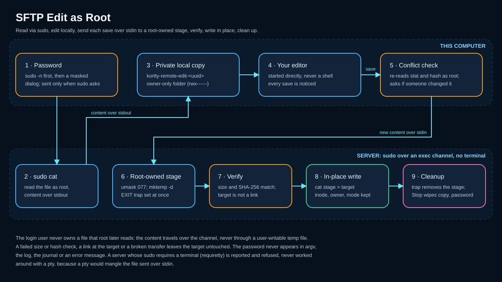

Manager für SFTP-Dateien¶
Der integrierte SFTP-Manager bietet einen grafischen Dateimanager zum Übertragen von Dateien zwischen Ihrem lokalen Computer und Remote-Servern über SFTP. Es verfügt über ein Dual-Panel-Layout, vollständige Unterstützung für Dateivorgänge und eine nahtlose Integration mit dem Snippet-Editor für die Fernbearbeitung von Dateien.
SFTP-Manager öffnen¶
Sie können den SFTP-Manager auf zwei Arten öffnen:
- Menü: Verbindungen → SFTP-Client... (Ctrl+Shift+U, unter macOS Cmd+Shift+U). Ist ein verbundener Terminal-Tab im Vordergrund, öffnet er sich auf dem fokussierten Bereich dieses Tabs, wie bei SFTP hier öffnen; andernfalls wählen Sie zuerst eine Verbindung aus.
- Aus einem Terminal: Verbindungen → SFTP hier öffnen, SFTP hier öffnen im Rechtsklickmenü eines Terminal-Tabs oder SFTP hier öffnen im Rechtsklickmenü eines Bereichs. Auch die Befehlspalette findet den Befehl. Siehe Aus einem Terminal-Tab öffnen.
- Dashboard: Rechtsklick auf eine verbundene Sitzung > SFTP-Client...
Wenn die Verbindung einen temporären SSH-Schlüssel verwendet, der abgelaufen ist, werden Sie aufgefordert, einen neuen Schlüssel einzugeben, bevor die Verbindung fortgesetzt werden kann.
Aus einem Terminal-Tab öffnen¶
SFTP hier öffnen öffnet den SFTP-Manager über die SSH-Sitzung, die der Terminalbereich bereits hat, sodass keine zweite Anmeldung nötig ist: keine zweite Passwort- oder MFA-Abfrage, kein zweiter Sprung über einen Jump-Server und keine erneute Abfrage des CyberArk-Zugriffsgrunds. Verwendet wird der Bereich, in dem Sie tippen (oder der Bereich, den Sie mit der rechten Maustaste angeklickt haben), und in einem geteilten Tab, dessen Bereich eine andere Verbindung ausführt, öffnet er sich als Benutzer und Server dieses Bereichs, nicht als die des Tabs.
Die Serverseite startet in dem Ordner, in dem sich die Shell befindet: dem Ordner, den die Shell meldet (OSC 7 oder der korTTY-Agent-Hook), sonst dem im Prompt angezeigten Ordner, sonst dem Ordner Ihres letzten cd. ~ und relative Ordner werden relativ zu Ihrem Home-Ordner aufgelöst. Existiert dieser Ordner nicht mehr, wird der Anmeldeordner angezeigt, und die Statusleiste weist darauf hin. In zwei Fällen startet er absichtlich im Anmeldeordner, mit einem Hinweis in der Statusleiste: bei einem Bereich, in dem eine andere Sitzung aktiv ist (nach su, sudo -i oder einem verschachtelten ssh), weil dessen Ordner einem anderen Benutzer oder Host gehört, und bei einer Verbindung mit einem Shell-Startbefehl, der vor dem ersten Prompt den Benutzer wechseln kann.
Jeder Bereich erhält einen eigenen SFTP-Tab, sodass sich zwei Bereiche desselben Servers nebeneinander durchsuchen lassen; wählen Sie für denselben Bereich erneut SFTP hier öffnen, wird dessen Tab ausgewählt. Einen Tab, der über Verbindungen → SFTP-Client... mit einer ausgewählten Verbindung geöffnet wurde, gibt es weiterhin einmal pro Verbindung, und die beiden Arten ersetzen einander nie.
Ein solcher Tab kopiert höchstens zwei Dateien gleichzeitig, auch wenn Einstellungen → SFTP-Manager mehr erlaubt, damit das Terminal auf derselben Sitzung reaktionsfähig bleibt. Das Schließen des Tabs schließt nie das Terminal. Endet die Sitzung des Terminals, wird der Bereich geschlossen oder läuft darin inzwischen ein anderer Benutzer oder Host, zeigt der Tab Getrennt mit Neu verbinden, das die Sitzung des Bereichs wieder verwendet, sobald sie zurück ist, und Eigene Anmeldung, das den Tab schließt und einen Tab mit eigener Anmeldung für die Verbindung des Bereichs öffnet.
Hat der Bereich keine SSH-Sitzung, die er teilen kann (ein Mosh- oder lokaler Shell-Tab), oder verweigert der Server oder ein Proxy SFTP darüber, öffnet korTTY stattdessen wie bisher einen SFTP-Tab mit eigener Anmeldung für die Verbindung des Bereichs. Ein gespeichertes Projekt stellt einen solchen Tab als gewöhnlichen SFTP-Tab mit eigener Anmeldung wieder her, in den Ordnern, in denen er sich befand.
Schnittstelle¶
Der SFTP-Manager verwendet ein Zwei-Panel-Layout für eine einfache Dateiverwaltung nebeneinander:
| Linker Bereich (lokale) | Rechter Bereich (fern) |
|---|---|
| Lokale Dateien durchstöbern | Ferndateien durchstöbern |
| Auf Remote-System hochladen | Auf lokales System herunterladen |
Sortierbare Spalten¶
Beide Paneele zeigen die gleichen Spalten an, von denen alle durch Klicken auf den Spaltenkopf sortierbar sind:
| Spalte | Beschreibung |
|---|---|
| Name | Datei oder Verzeichnisaname |
| Typ | Verzeichnis (📁) oder Datei (📄) Hinweis |
| Größe | Dateigröße im menschenlesbaren Format (Verzeichnisse zeigen —); die Sortierung verwendet die exakte Byteanzahl, mit Ordnern zuerst |
| Datum | Letzte Änderungsdatum und -zeit |
| Benutzer | Eigentümername (lokale Umgebung: aus der Dateisystem; remote: aus SFTP oder UID) |
| Gruppe | Gruppenname (lokal: vom Dateisystem; remote: von SFTP oder GID) |
| Berechtigungen | Berechtigungen im Unix-Stil (z. B. rwxr-xr-x) |
Standardsortierreihenfolge¶
Standardmäßig werden Dateien in der folgenden Reihenfolge nach der Spalte Typ sortiert:
- Übergeordnetes Verzeichnis (
..) – immer oben - Verzeichnisse, die mit „.“ beginnen (z. B.
.git,.config) – alphabetisch - Andere Verzeichnisse – alphabetisch
- Dateien, die mit „.“ beginnen (z. B.
.bashrc) – alphabetisch - Alle anderen Dateien – alphabetisch
Klicken Sie auf eine beliebige Spaltenüberschrift, um nach dieser Spalte zu sortieren. Durch erneutes Klicken der Typ-Spalte wird zwischen aufsteigender und absteigender Reihenfolge umgeschaltet. Das übergeordnete Verzeichnis (..) bleibt immer oben, unabhängig von Spalte und Richtung der Sortierung.
Durchsuchen des Servers¶
Remote-Ordner werden im Hintergrund gelesen, sodass das Fenster auch bei Ordnern mit Zehntausenden von Einträgen reaktionsfähig bleibt. Während ein Ordner geladen wird, überdeckt ein Wird geladen…-Indikator die Remote-Liste. Das Pfadfeld und die Liste wechseln erst in den neuen Ordner, wenn er gelesen wurde; falls das Lesen fehlschlägt (Ordner existiert nicht oder Sie haben keine Rechte), wird ein Fehler angezeigt und der Ordner, in dem Sie sich befanden, bleibt bestehen.
Geben Sie einen Pfad in das Remote-Pfad-Feld ein und drücken Enter, um dorthin zu gelangen. ~ und ~/… stehen für Ihr Login-Verzeichnis auf dem Server, und ein Pfad ohne führendes / wird relativ zum angezeigten Ordner interpretiert; .. und . werden aufgelöst, sodass ../logs den Geschwisterordner logs öffnet.
Verbindung verloren¶
Wenn der Server oder das Netzwerk die Sitzung beendet, zeigt die Statusleiste Getrennt von host mit einer Schaltfläche Neu verbinden, und die Remote-Aktionen sind deaktiviert. Wenn die Verbindung ohne Mitteilung des Servers abbricht, führt die erste Remote-Aktion, die Sie versuchen (Refresh, Upload, Download usw.), wieder denselben Zustand aus, anstatt nichts zu tun.
Neu verbinden öffnet eine neue Sitzung mit denselben Anmeldeinformationen und listet den Ordner auf, in dem Sie sich befanden. Der Hostschlüssel des Servers wird wie bei der ersten Verbindung geprüft: ein unveränderter Schlüssel verbindet ohne Aufforderung, ein geänderter Schlüssel bleibt blockiert.
Wieder öffnen mit einem Projekt¶
SFTP-Manager-Tabs werden mit einem Projekt gespeichert. Das Öffnen des Projekts mit Automatisches Wiederverbinden verbindet jeden Tab erneut mit den lokalen und entfernten Ordnern, in denen er sich zum Zeitpunkt des Speicherns befand. Ein Ordner, der nicht mehr existiert, öffnet stattdessen den Home-Ordner; auf der entfernten Seite sagt die Statusleiste dies an.
Dateioperationen¶
Jedes Panel hat seine eigene Gruppe von Toolbar-Buttons unter den Listen (lokal links, remote rechts) und ein Rechtsklick-Kontextmenü:
| Betrieb | Wie |
|---|---|
| Hochladen | Wählen Sie lokale Dateien oder Ordner aus und klicken Sie auf Hochladen, oder ziehen Sie sie in das Remote-Panel; siehe Ziehen und Ablegen |
| Herunterladen | Wählen Sie Remote-Dateien oder Ordner aus und klicken Sie auf Herunterladen, oder ziehen Sie sie in das lokale Panel |
| Umbenennen | Wählen Sie einen Eintrag aus und drücken Sie F2, oder wählen Sie Umbenennen im Kontextmenü. Ein vorhandener Eintrag mit dem neuen Namen wird niemals ersetzt; stattdessen erhalten Sie einen Fehler |
| Neuer Ordner | Klicken Sie auf die Ordner-Schaltfläche neben Aktualisieren, oder wählen Sie Neuer Ordner im Kontextmenü, in beiden Panels. Der Ordner wird im angezeigten Verzeichnis erstellt; ein bereits vorhandener Name ist ein Fehler |
| Löschen | Wählen Sie Einträge aus und klicken Sie auf Löschen, wählen Sie Löschen im Kontextmenü, oder drücken Sie Del (Ctrl+Backspace, auf macOS Cmd+Backspace). Sie bestätigen vor dem Löschen von etwas |
| Kopieren | Kopieren nach… im Kontextmenü kopiert innerhalb derselben Seite: lokal in ein von Ihnen ausgewähltes Verzeichnis (im Hintergrund), remote in einen von Ihnen eingegebenen Pfad. Ein Remote-Verzeichnis, das an einer Stelle kopiert wird, an der bereits ein Verzeichnis mit diesem Namen existiert, wird in dieses zusammengeführt; das Kopieren eines Elements auf sich selbst oder in einen seiner eigenen Unterordner wird mit einem Fehler abgelehnt. |
| Im Snippet-Editor bearbeiten | Wählen Sie genau eine lokale oder Remote-Datei aus und verwenden Sie dann das Symbolleistenmenü Bearbeiten oder das Kontextmenü mit der rechten Maustaste |
| Archivieren | Archivieren in der Remote-Werkzeugleiste, oder Archivieren... im jeweiligen Kontextmenü, packt die Auswahl als ZIP, TAR.BZ2 oder 7z, je nach verfügbaren Tools auf dieser Seite. Ein lokales Archiv kann ein Passwort haben, ein Archiv auf dem Server nicht, weil zip und 7z das Passwort auf der Befehlszeile des Servers bräuchten, wo andere Benutzer des Servers es lesen können |
| Hier entpacken | Klicken Sie mit der rechten Maustaste auf ein Archiv auf dem Server (.zip, .tar, .tar.gz/.tgz, .tar.bz2, .tar.xz oder .7z) und wählen Sie Hier entpacken.... Es wird auf dem Server in einen neuen Ordner daneben entpackt; siehe Archive auf dem Server entpacken |
| Besitzer/Berechtigungen setzen | Wählen Sie Einträge aus, klicken dann auf Rechte oder wählen Besitzer/Berechtigungen setzen... im Kontextmenü. Separate Felder für Benutzer, Gruppe und oktale Berechtigungen (z.B., 755) |
Ein Name für Umbenennen oder Neuer Ordner muss ein einzelnes Element im angezeigten Ordner sein: er darf nicht leer, . oder .. sein, und darf / oder \ nicht enthalten. Das Dialogfeld bleibt mit einem Fehler offen, bis der Name nutzbar ist.
Archive auf dem Server entpacken¶
Hier entpacken... im Remote-Kontextmenü entpackt das ausgewählte Archiv direkt auf dem Server, sodass nichts heruntergeladen oder hochgeladen wird. Nach Ihrer Bestätigung zeigt ein Fortschrittsfenster jeden Schritt an, und Abbrechen stoppt das Entpacken und entfernt, was bereits entpackt wurde.
- Immer ein neuer Ordner — die Dateien landen in einem neuen Ordner neben dem Archiv, der nach ihm ohne Dateiendung benannt ist (aus
site-1.2.tar.gzwirdsite-1.2). Ist dieser Name vergeben, verwendet korTTYsite-1.2 (1),site-1.2 (2)und so weiter; eine vorhandene Datei oder ein vorhandener Ordner wird nie überschrieben oder zusammengeführt. - Geprüft, bevor etwas geschrieben wird — korTTY listet zuerst den Inhalt des Archivs auf und lehnt es als Ganzes ab, wenn ein Eintrag außerhalb des neuen Ordners landen würde: ein absoluter Pfad,
.., das über den Ordner hinausführt, ein Laufwerksbuchstabe wieC:, ein Name mit Zeilenumbruch, eine Gerätedatei oder ein Link, dessen Ziel außerhalb liegt. In diesem Fall wird nichts geschrieben. - Nach dem Entpacken erneut geprüft — das Archiv wird in einen versteckten Staging-Ordner (
.kortty-extract.plus zufällige Zeichen) entpackt, den nur Sie öffnen können, ohne die im Archiv gespeicherten Eigentümer zu übernehmen. korTTY prüft dann jeden symbolischen Link darin; zeigt einer aus dem Ordner hinaus, wird der Staging-Ordner gelöscht und Sie erhalten einen Fehler. Nur ein sauberes Ergebnis wird in den neuen Ordner umbenannt, sodass dieser vollständig oder gar nicht erscheint. - Werkzeuge auf dem Server — ZIP benötigt
unzip, die tar-Formatetarund 7z7zoder7za. Fehlt das Werkzeug, nennt die Fehlermeldung es. Mit einem anderen tar als GNU tar (zum Beispiel BusyBox) werden Archive mit Hardlinks abgelehnt, weil deren Ziele nicht geprüft werden können. - Keine Passwörter — passwortgeschützte Archive werden mit einer Meldung abgelehnt: Die Werkzeuge bräuchten das Passwort auf der Befehlszeile des Servers, wo andere Benutzer des Servers es lesen können.
Ziehen und Ablegen¶
Sie können Einträge zwischen den beiden Panels ziehen, von Ihrem Desktop in den SFTP-Manager und in kleinen Mengen vom Server auf Ihren Desktop. Während Sie ziehen, wird das Panel oder die Ordnerzeile, in die der Drop erfolgen würde, hervorgehoben; ein Drop auf eine Ordnerzeile legt die Einträge in diesen Ordner, ein Drop an einer anderen Stelle in den angezeigten Ordner.
| Ziehen | Ergebnis |
|---|---|
| Lokale Zeilen auf das Remote-Panel | Hochgeladen, wie bei Hochladen: Ein Ordner wird zusammengeführt, und eine gleichnamige Datei auf dem Server wird nicht ohne Nachfrage ersetzt (siehe Wenn eine Datei bereits existiert) |
| Dateien aus Finder, Explorer oder der Dateibrowser-Seitenleiste auf das Remote-Panel | hochgeladen – dieselbe Methode |
| Remote-Zeilen auf das lokale Panel | Im Hintergrund heruntergeladen, wie bei Herunterladen: einschließlich Ordnern, und eine gleichnamige lokale Datei wird nicht ohne Nachfrage ersetzt |
| Dateien aus Finder, Explorer oder der Dateibrowser-Seitenleiste auf das lokale Panel | Kopiert im Hintergrund; ein bereits vorhandener Name bekommt eine Nummer, wie in report (2).txt, und eine Datei, die auf den Ordner fallen gelassen wird, bleibt unverändert |
| Lokale Zeilen auf den Desktop oder ein anderes Programm | Als die Dateien selbst angeboten |
| Remote Zeilen auf den Desktop oder ein anderes Programm | Nur für maximal 20 Dateien mit insgesamt höchstens 16 MB, keine Ordner |
Ein Drag in dasselbe Panel bewirkt nichts; nutzen Sie dort Kopieren nach... oder Umbenennen.
Ziehen vom Server zum Desktop
Der Desktop kann nur Dateien übernehmen, die bereits existieren, wenn der Drag beginnt. korTTY lädt daher die gezogenen Remote-Dateien zunächst in einen privaten temporären Ordner, was das Fenster bis zu 5 Sekunden blockieren kann. Ordner, mehr als 20 Dateien, mehr als 16 MB oder ein Download, der länger dauert, können nur innerhalb des Fensters abgelegt werden; die Statusleiste weist darauf hin, und Sie legen sie stattdessen auf dem lokalen Panel ab. Ein Download, der die Zeit überschreitet, stoppt mitten in seiner Datei und löscht, was er geschrieben hat, damit er den temporären Ordner nicht im Hintergrund weiter füllt. Ein Link auf dem Server zählt als die Datei, auf die er zeigt, sodass ein Link zu einer großen Datei ebenfalls nicht dem Desktop angeboten wird. Die temporären Kopien werden gelöscht, wenn Sie den nächsten Drag starten oder den Tab schließen.
Tasten¶
Diese Tasten funktionieren in beiden Panels:
| Taste | Aktion |
|---|---|
| F2 (in der Liste) | Den ausgewählten Eintrag umbenennen |
| Del oder Ctrl+Backspace (Cmd+Backspace auf macOS, in der Liste) | Löschen der Auswahl, nach Bestätigung |
| Enter (im Pfad Feld) | Gehe zum eingegebenen Ordner |
Dateien und Ordner hochladen¶
Hochladen kopiert die ausgewählten lokalen Dateien und Ordner in den entfernten Ordner, der angezeigt wurde, als Sie Hochladen geklickt haben; das Durchsuchen anderer Orte während es läuft ändert das Ziel nicht. Hochladen bleibt deaktiviert, bis der erste entfernte Ordner aufgelistet wurde, weil der Server ~ selbst nicht erweitert.
- Ein erneut hochgeladener Ordner wird zusammengeführt mit dem vorhandenen Remote-Ordner: Andere Remote-Dateien bleiben erhalten, und für jede bereits vorhandene Datei fragt korTTY, was geschehen soll (siehe unten).
- Dateien werden gestreamt, sodass ihre Größe nicht durch den Speicher begrenzt ist; Dateien größer als 2 GB werden wie jede andere hochgeladen.
- Bricht die Verbindung während eines Uploads oder Downloads ab, schlagen die unfertigen Einträge mit Verbindung verloren fehl, und es erscheint ein einziger Status Getrennt statt eines Fehlerdialogs pro Datei; wählen Sie sie nach Neu verbinden in der Übertragungsliste aus und klicken Sie auf Wiederholen.
- Verlinkten Ordnern wird nicht gefolgt. Ein symbolischer Link auf eine Datei wird mit dem Inhalt der Datei übertragen; ein Link auf einen Ordner wird übersprungen und in der Zusammenfassung am Ende genannt, sodass eine Link-Schleife eine Übertragung nicht endlos laufen lassen kann.
- Heruntergeladene Namen bleiben im Zielordner. Ein Servername wie
..odera/bwird abgelehnt. Unter Windows werden außerdem Namen abgelehnt, die Windows für Geräte reserviert (CON,PRN,AUX,NUL,COM1bisCOM9,LPT1bisLPT9, auch mit einer Endung wienul.txt), sowie Namen, die auf einen Punkt oder ein Leerzeichen enden oder:enthalten, weil Windows sie an einer anderen Stelle schreiben oder verändern würde.
Übertragungsliste¶
Uploads und Downloads laufen im Hintergrund, bis zu drei Dateien gleichzeitig (Einstellungen → SFTP-Manager → Parallele Übertragungen, 1 bis 8), jede über einen eigenen SFTP-Kanal. Die erste Übertragung öffnet die Liste Übertragungen am unteren Rand des Tabs; der Pfeil links davon klappt sie auf ihre Kopfzeile zusammen. Jede Zeile ist eine Datei oder ein Ordner, den Sie übertragen haben, mit Richtung, Fortschrittsbalken, bisher übertragenen Bytes, Geschwindigkeit und Restzeit; eine Ordnerzeile fasst die darin enthaltenen Dateien zusammen. Die Statusleiste zeigt, wie viele Dateien aller laufenden Übertragungen fertig sind, und die Gesamtgeschwindigkeit an und meldet Hochgeladen oder Heruntergeladen, wenn ein Stapel abgeschlossen ist.

| Schaltfläche | Aktion |
|---|---|
| Abbrechen | Stoppt die ausgewählten Zeilen; eine abgebrochene Datei hinterlässt keine Teildatei, es sei denn, die Einstellungen behalten sie für ein späteres Fortsetzen |
| Wiederholen | Startet die ausgewählten fehlgeschlagenen oder abgebrochenen Zeilen erneut; für einen Ordner nur das, was nicht angekommen ist |
| Alle abbrechen | Stoppt alle Übertragungen, einschließlich einer offenen Frage Datei existiert bereits |
| Fertige entfernen | Entfernt die Zeilen, die fertig, übersprungen oder abgebrochen sind; fehlgeschlagene Zeilen bleiben für einen neuen Versuch stehen |
- Fehler öffnen nicht mehr einen Fehlerdialog pro Datei. Eine fehlgeschlagene Datei erhält eine eigene rote Zeile (auch wenn sie in einem übertragenen Ordner liegt), der Grund steht in ihrer Spalte Status, und sobald der Stapel abgeschlossen ist, listet ein einziges Zusammenfassungsfenster die fehlgeschlagenen Dateien und die verlinkten Ordner auf, denen nicht gefolgt wurde. Die Zusammenfassung blockiert den Tab nicht.
- Die Listen folgen den Übertragungen. Wenn Dateien in dem Ordner ankommen, den ein Panel anzeigt, wird dieses Panel kurz darauf neu eingelesen; ein Ordner, den Sie inzwischen verlassen haben, nicht.
- Dateien kommen vollständig oder gar nicht an. Eine Datei wird zuerst als
name.kortty-partneben dem Ziel geschrieben und erhält ihren echten Namen erst, wenn sie vollständig ist, sodass eine unterbrochene Übertragung nie eine halb geschriebene Datei unter dem echten Namen hinterlässt. Die einzige Ausnahme ist das Ersetzen einer Serverdatei, die einem anderen Benutzer gehört; sie wird direkt an Ort und Stelle geschrieben (siehe Wenn eine Datei bereits existiert). - Unterbrochene Übertragungen setzen dort fort, wo sie aufgehört haben. Nach einem Fehler oder einem Verbindungsabbruch setzt Wiederholen eine unfertige Datei fort, statt von vorn zu beginnen; siehe Fortsetzen unterbrochener Übertragungen.
- Das Schließen des Tabs fragt nach, solange Übertragungen laufen. Die Schließen-Schaltfläche des Tabs, Datei > Tab schließen, Alle Tabs schließen, das Schließen des Fensters und das Beenden von korTTY fragen zuerst n laufende Übertragungen abbrechen und schließen?; Tab geöffnet lassen ist die Vorgabe und lässt alle Übertragungen weiterlaufen. Das Schließen bricht die nicht abgeschlossenen Übertragungen ab und löscht ihre Teildateien, es sei denn, Einstellungen → SFTP-Manager behält die Teildateien abgebrochener Übertragungen. Bei fertigen oder fehlgeschlagenen Zeilen wird nicht nachgefragt, und das automatische Schließen inaktiver Tabs wartet, bis die Übertragungen abgeschlossen sind.
- Übrig gebliebene Teildateien werden kursiv und mit einem Tooltip angezeigt. Übrig gebliebene Teildateien entfernen am Ende des Kontextmenüs beider Panels löscht nach einer Bestätigung die
.kortty-part-Dateien im angezeigten Ordner; Teildateien noch laufender Übertragungen bleiben unberührt.
Fortsetzen unterbrochener Übertragungen¶
Eine Übertragung, die fehlschlägt oder deren Verbindung abbricht, behält ihre Datei name.kortty-part, und Wiederholen (nach Neu verbinden, falls die Verbindung verloren ging) setzt sie dort fort, wo sie aufgehört hat. Während sie fortgesetzt wird, zeigt ihre Spalte Status Wird fortgesetzt an.
- Nur wenn sich nichts geändert hat. korTTY merkt sich beim Start der Übertragung Größe und Änderungszeit der Quelle. Ist die Quelle beim erneuten Versuch anders, ist die Teildatei größer als die Quelle oder stimmen die letzten 64 KB vor dem Fortsetzungspunkt nicht mehr mit der Quelle überein, wird die Teildatei entfernt und die Datei von Anfang an kopiert.
- Nur Ihre eigenen Teildateien. Auf dem Server wird eine Teildatei nur fortgesetzt, wenn sie noch eine normale Datei ist, die dem Benutzer gehört, als der Sie angemeldet sind; in einen Link oder eine Datei eines anderen Benutzers unter diesem Namen wird nie geschrieben. Auch auf Ihrem Computer wird der Teildatei nie über einen Link gefolgt. Eine Teildatei, die korTTY nicht für genau diese Übertragung hinterlassen hat (ein anderer Tab, ein anderer Computer oder ein anderer Benutzer schreibt sie vielleicht gerade), wird weder fortgesetzt noch entfernt: Die Übertragung schlägt mit einer Meldung fehl, die die Datei nennt, und einen echten Rest entfernen Sie mit Übrig gebliebene Teildateien entfernen.
- Abbrechen entfernt die Teildatei, es sei denn, Einstellungen → SFTP-Manager → Teildatei behalten, wenn eine Übertragung abgebrochen wird ist eingeschaltet. Ist dort Unterbrochene Übertragungen fortsetzen ausgeschaltet, wird jede unfertige Teildatei entfernt, und ein erneuter Versuch beginnt immer von vorn.
- Was korTTY speichert. Die gemerkten Größen und Zeiten liegen in
sftp-resume-index.jsonim Konfigurationsordner von korTTY und sind nur für Sie lesbar. Ein Eintrag enthält einen Fingerabdruck der Verbindung und der beiden Pfade, nicht die Pfade oder Hostnamen selbst und nie Dateiinhalte; Einträge von Übertragungen, die Sie nie wiederholt haben, werden nach 30 Tagen verworfen. Die Datei ist nicht Teil der Konfigurationssicherung, weil die Teildateien, die sie beschreibt, auf diesem Computer und seinen Servern bleiben. - Übrig gebliebene Teildateien von Übertragungen, die Sie aufgegeben haben, entfernen Sie mit Übrig gebliebene Teildateien entfernen im Kontextmenü beider Panels (siehe Übertragungsliste).
Wenn eine Datei bereits existiert¶
Ein Upload oder Download ersetzt nie stillschweigend eine vorhandene Datei. Enthält der Zielordner bereits einen Eintrag mit demselben Namen, zeigt korTTY Datei existiert bereits mit Größe und Änderungszeit beider Seiten an (die spätere Zeit ist als neuer markiert) und bietet diese Möglichkeiten:
| Auswahl | Ergebnis |
|---|---|
| Ersetzen | Die vorhandene Datei wird durch die übertragene ersetzt |
| Überspringen | Der vorhandene Eintrag bleibt unverändert, und dieses Element wird nicht übertragen |
| Beide behalten | Das Element wird unter einem freien Namen mit einer Nummer übertragen, etwa report (1).txt; eine doppelte Endung bleibt zusammen (backup (1).tar.gz), und eine Punktdatei erhält die Nummer am Ende (.bashrc (1)) |
| Übertragung abbrechen | Der Rest des Stapels wird gestoppt; das Schließen des Dialogs oder Esc bewirkt dasselbe |

- Für alle weiteren Konflikte dieser Art übernehmen beantwortet jeden späteren Konflikt derselben Art in diesem Stapel, ohne erneut zu fragen. Die Arten werden auseinandergehalten: Das Ersetzen aller Dateien ersetzt nie einen symbolischen Link oder einen Ordner.
- Ein Ordner wird mit einem gleichnamigen Ordner zusammengeführt, ohne nachzufragen; nur die darin enthaltenen Dateien können in Konflikt geraten.
- Ein symbolischer Link wird nie ersetzt. Ist der vorhandene Eintrag ein Link, werden nur Überspringen und Beide behalten angeboten, sodass eine Übertragung nicht über einen Link in eine Datei an anderer Stelle schreiben kann.
- Eine Datei und ein Ordner können sich nicht gegenseitig ersetzen. Ist eine Seite eine Datei und die andere ein Ordner, werden nur Überspringen und Beide behalten angeboten.
- Eine Datei, die einem anderen Benutzer gehört, wird an Ort und Stelle geschrieben. Gehört die vorhandene Remote-Datei einem anderen Benutzer, weist der Dialog darauf hin; beim Ersetzen wird direkt in die Datei geschrieben, sodass Eigentümer und Berechtigungen erhalten bleiben.
- Immer nur eine Frage. Geraten mehrere Dateien eines Stapels gleichzeitig in Konflikt, fragt korTTY nach einer davon und lässt die anderen warten, sodass eine Antwort für alle vor der nächsten Frage vorliegt. Das Schließen des Tabs beantwortet eine offene Frage mit Übertragung abbrechen.
- Die Frage lässt sich im Voraus beantworten. Einstellungen → SFTP-Manager → Wenn das Ziel bereits existiert kann vorhandene Dateien ohne Nachfrage überspringen oder überschreiben; bei Links und bei Konflikten zwischen Datei und Ordner wird weiterhin nachgefragt. Eine Organisation kann diese Auswahl für Sie festlegen.
- Auf einem Computer, dessen Datenträger nicht zwischen Groß- und Kleinschreibung unterscheidet (die Vorgabe unter macOS und Windows), gilt ein Name, der sich nur in der Groß-/Kleinschreibung unterscheidet, als derselbe Name, sowohl für die Frage als auch für den nummerierten Namen, den Beide behalten wählt.
Wenn Ihre Organisation die Dateiübertragung abgeschaltet hat¶
Eine Organisation kann die Dateiübertragung mit ihrer Unternehmensrichtlinie abschalten (file-transfer = "deny"). Der SFTP-Manager öffnet und durchsucht den Server dann weiterhin, und Umbenennen, Löschen, Berechtigungen, Archive, Suche und Kopieren auf dem Server funktionieren weiter, aber Hochladen, Herunterladen und Wiederholen in der Übertragungsliste sind ausgegraut, das Ziehen von Dateien auf das Server-Panel oder von Serverdateien auf das lokale Panel wird nicht angenommen (der Mauszeiger zeigt kein Kopiersymbol), und Remote-Dateien lassen sich nicht auf den Desktop ziehen. Dateien vom Desktop können weiterhin auf dem lokalen Panel abgelegt werden. Das Ablegen von Dateien auf einem Terminalbereich wird ebenso schon beim Ziehen abgelehnt, und Als Datei(en) ins Terminal-Verzeichnis kopieren und Ordner ins Terminal-Verzeichnis kopieren im Snippet-Manager sind für SSH-Tabs ausgegraut. SFTP hier öffnen öffnet den SFTP-Manager weiterhin zum Durchsuchen. JobScheduler-Jobs, die per SFTP hochladen, herunterladen oder synchronisieren, sowie rsync-Jobs schlagen mit derselben Meldung fehl, ohne eine Verbindung aufzubauen. Befehle wie scp, die in ein Terminal eingegeben werden, sind davon nicht betroffen.
Berechtigungen¶
Das Berechtigungsfeld von Besitzer/Berechtigungen setzen und des Remote-Archivdialogs akzeptiert genau drei Oktalziffern, wie 755 oder 644; lassen Sie es leer (oder unverändert), um den aktuellen Modus beizubehalten. Alles andere lässt das Dialogfeld mit einem Fehler offen, sodass kein anderer Text jemals chmod erreicht.
Bearbeiten von Dateien mit dem Snippet-Editor¶
Die Aktion Im Snippet-Editor bearbeiten ist nur für eine einzelne ausgewählte Datei aktiviert. Es ist deaktiviert für:
- Ordner
- Der Eintrag im übergeordneten Verzeichnis (
..) - Mehrfachauswahl
Lokale Dateien werden direkt aus dem lokalen Dateisystem gelesen; Remote-Dateien werden über die aktive SFTP-Sitzung in den Editor heruntergeladen.
Wenn die Datei im Snippet-Editor geöffnet wird, bleibt die vollständige Symbolleiste verfügbar, einschließlich:
- Formatierung und Syntaxprüfung
- Editor-Profile und Styling
- Zeilennummern und Zeilenumbruch
- Konfigurierte KI-Aktionen
Die Dateimodus-Schaltflächen bieten folgende Speicheroptionen:
- Datei überschreiben – schreibt den aktuellen Editorinhalt zurück in die ursprüngliche lokale oder Remote-Datei
- Speichern unter... – schreibt eine neue lokale Datei über eine Dateiauswahl oder fordert für Remote-Dateien zur Eingabe eines neuen Dateinamens im selben Remote-Verzeichnis auf
- Als Snippet speichern – speichert den aktuellen Inhalt als neues Snippet-Manager-Snippet, ohne die Quelldatei als gespeichert zu markieren
Eine Organisation kann das Bearbeiten von Serverdateien mit dem Schlüssel load-into-snippet-editor ihrer Unternehmensrichtlinie einschränken. Mit read-only öffnen sich Remote-Dateien weiterhin im Snippet-Editor und können als Snippet gespeichert werden, aber Datei überschreiben und Speichern unter... sind gesperrt, und ihr Tooltip nennt die Richtlinie. Mit deny sind Im Snippet-Editor bearbeiten und Bild öffnen für Remote-Dateien deaktiviert. Lokale Dateien im linken Panel liegen auf Ihrem eigenen Computer und bleiben in jedem Fall bearbeitbar.

Im eigenen Editor bearbeiten¶
In externem Editor bearbeiten (im Rechtsklickmenü einer Serverdatei und im Remote-Menü Bearbeiten) öffnet die ausgewählte Serverdatei in Ihrem eigenen Texteditor und kopiert jedes Speichern zurück auf den Server. Den Editor wählen Sie unter Einstellungen → SFTP-Manager → Externer Editor; ist keiner festgelegt, öffnet sich die Datei als Text im Editor des Systems.
- Lokale Kopie — die Datei wird in einen privaten Ordner namens
kortty-remote-edit-…im temporären Ordner des Systems heruntergeladen, den nur Sie öffnen können, und zwar unter einem bereinigten Namen: Andere Zeichen als Buchstaben, Ziffern,.,_,-und Leerzeichen werden zu_, und Windows-Gerätenamen wieCONerhalten ein vorangestelltes_. Einem symbolischen Link wird einmal gefolgt, und bearbeitet wird die Datei, auf die er zeigt. - Automatischer Upload — korTTY prüft die Kopie jede Sekunde. Etwa eine Sekunde nach dem Speichern wird der neue Inhalt hochgeladen, und die Statusleiste meldet hochgeladen mit dem Dateinamen; erneutes Speichern desselben Inhalts lädt nichts hoch. Der Upload funktioniert wie jeder andere: über eine
.kortty-part-Datei, die die Berechtigungen der Datei beibehält, oder direkt an Ort und Stelle geschrieben, wenn die Datei einem anderen Benutzer gehört, sodass ihr Eigentümer erhalten bleibt. - Bearbeitete Serverdateien — die Liste unter der Übertragungsliste zeigt jede bearbeitete Datei, ob sie auf ein Speichern wartet, gerade hochlädt oder hochgeladen wurde (mit Uhrzeit), und bietet Jetzt hochladen für Editoren, deren Speichern nicht erkannt wird, sowie Stoppen.
- Konflikte — vor jedem Upload prüft korTTY, ob die Serverdatei noch die ist, die es heruntergeladen hat (Größe, Zeit, Eigentümer und bis 10 MB auch der Inhalt). Hat jemand anderes sie geändert oder gelöscht, fragt es nach: Serverdatei überschreiben, Lokale Kopie speichern unter... (behält Ihre Version auf diesem Computer und beendet die Beobachtung), Beobachten beenden oder Später entscheiden (beobachtet weiter; hochgeladen wird erst beim nächsten Speichern oder mit Jetzt hochladen).
- Aufräumen — Stoppen, das Schließen des SFTP-Tabs und das Beenden von korTTY löschen die lokale Kopie. Geht die Verbindung verloren, bevor Ihr letztes Speichern hochgeladen wurde, bietet korTTY zuerst Kopie speichern unter... an. Ordner, die ein Absturz hinterlassen hat, werden beim nächsten Start entfernt, sobald sie einen Tag alt sind.
Der Editor wird immer direkt gestartet, nie über eine Shell oder als Standardanwendung der Datei, sodass ein heruntergeladenes Skript nie ausgeführt wird. Mit load-into-snippet-editor = "read-only" in der Unternehmensrichtlinie öffnet sich die Datei, aber gespeicherte Änderungen bleiben auf Ihrem Computer, und die Liste weist darauf hin; load-into-snippet-editor = "deny" oder file-transfer = "deny" graut In externem Editor bearbeiten aus.
Als root bearbeiten¶
Öffnen mit → Als root bearbeiten (sudo)... (im Rechtsklickmenü einer Serverdatei, sowie Als root bearbeiten (sudo)... im Remote-Menü Bearbeiten) öffnet eine Datei, die nur root ändern darf, etwa eine Konfigurationsdatei unter /etc, in Ihrem eigenen Editor, genauso wie unter Im eigenen Editor bearbeiten. Die Zeile in Bearbeitete Serverdateien trägt ein sudo-Badge.

- Passwort — korTTY versucht zuerst
sudo -n, sodass mitNOPASSWDoder einem noch gültigen sudo-Ticket nichts abgefragt wird. Andernfalls fragt es in einem maskierten Dialog nach Ihrem Passwort. Hat der JobScheduler für den Server oder dessen Gruppe ein sudo-Passwort gespeichert, bietet der Dialog an, es ab jetzt für diesen Server zu verwenden; ohne diese Wahl verwendet korTTY es nie, und wenn Sie das Kästchen später abwählen, wird sie zurückgenommen. Das Passwort wird nur so lange aufbewahrt, wie die Datei bearbeitet wird, nur dann an sudo übergeben, wenn sudo tatsächlich danach fragt, und beim Stoppen gelöscht. Es erscheint nie in einer Befehlszeile, im Log, in einer Fehlermeldung oder im Sitzungsjournal. - Lesen — die Datei wird mit
sudo catdirekt in die private lokale Kopie gelesen; dafür wird auf dem Server nichts geschrieben. - Speichern — jedes Speichern wird über die Verbindung auf den Server übertragen, in einen Staging-Ordner, den root anlegt und besitzt, und erst wenn Größe und SHA-256 übereinstimmen, wird es in die Datei selbst geschrieben. Die Datei behält Inode, Eigentümer, Berechtigungen, ACLs und SELinux-Label, und eine abgebrochene Übertragung lässt sie nie halb geschrieben zurück. Der Staging-Ordner wird in jedem Fall entfernt. Vor jedem Speichern liest korTTY die Datei erneut als root; hat jemand anderes sie inzwischen geändert, erscheint dieselbe Konfliktfrage wie oben.
- Links — ist der Pfad ein symbolischer Link oder führt er durch einen Ordner, der einer ist, zeigt korTTY an, wo die Datei wirklich liegt, und bearbeitet sie dort erst nach Ihrer Bestätigung. Unmittelbar vor jedem Lesen und Schreiben prüft root erneut, dass die Datei kein Link ist und ihr Ordner noch derselbe reale Ordner ist.
- Abgelehnt — eine Datei in einem Ordner, in den Sie ohne sudo schreiben können, oder irgendwo unterhalb eines solchen Ordners, wird nicht als root bearbeitet, weil alles, was unter Ihrem Benutzer läuft, die Datei oder einen Ordner auf dem Weg dorthin zwischenzeitlich ersetzen könnte; die Meldung nennt diesen Ordner, und Sie bearbeiten die Datei normal. Dateien über 64 MB werden ebenfalls abgelehnt.
- Journal — zeichnet ein Terminal auf derselben Verbindung ein Sitzungsjournal auf, erhält es eine Zeile mit
sudo-editund dem Pfad, nie den Inhalt. - Was der Server braucht —
sudo, eine POSIX-shmitmktemp,catundstatsowiesha256sumodershasumfür die Inhaltsprüfung. Ohne eines der beiden Hash-Werkzeuge vergleicht korTTY vor dem Schreiben weiterhin die Größe, kann aber den Inhalt nicht vergleichen. - Server mit
requiretty— enthält die sudo-Konfiguration des ServersDefaults requiretty, verweigert sudo die Ausführung ohne Terminal, und korTTY meldet sudo verlangt auf diesem Server ein Terminal (requiretty), und korTTY führt sudo nie mit einem Terminal aus. korTTY umgeht das nicht, indem es ein Terminal öffnet: Ein Terminal verändert die durchlaufenden Bytes (Zeilenenden, Steuerzeichen) und gibt das Gesendete als Echo zurück, sodass weder die Datei noch das Passwort unverändert und ungesehen ankämen. Ein Administrator kann die Regel für Ihr Konto mit einer Zeile wieDefaults:alice !requiretty(bearbeitet mitvisudo) aufheben; bis dahin bearbeiten Sie die Datei in einem Terminal-Tab, zum Beispiel mitsudoedit.
Die Unternehmensrichtlinie kann die Funktion mit sftp-sudo-edit = "deny" abschalten; sie ist außerdem ausgegraut, solange file-transfer verweigert wird oder load-into-snippet-editor nicht allow ist.
Suche¶
Das Suchfeld über jeder Liste filtert den angezeigten Ordner während der Eingabe, ohne ihn zu verlassen; der übergeordnete Eintrag .. bleibt sichtbar. korTTY bewertet die Platzhalter selbst, gleichartig für lokale und entfernte Namen. Ein Muster mit einem Platzhalter muss den gesamten Namen entsprechen, ohne Groß-/Kleinschreibung:
| Platzhalter | Trifft auf | Beispiel |
|---|---|---|
* |
Beliebig viele Zeichen | *.log findet alle Logdateien, backup* alle Namen beginnend mit "backup" |
? |
Genau ein Zeichen | data?.csv findet data1.csv, nicht data10.csv |
[abc], [a-z] |
Eines der aufgeführten Zeichen; [!abc] oder [^abc] eines, das nicht aufgeführt ist |
[ab]* findet Namen beginnend mit a oder b |
{py,sh} |
Eine der Alternativen | *.{py,sh} findet Python- und Shell-Dateien |
Text ohne Platzhalter passt überall im Namen, Groß-/Kleinschreibung ignorierend: rep findet Report.txt. Ein Muster, das nicht gelesen werden kann, wie ein nicht geschlossenes [, wird als einfacher Text gesucht.
Unterordner auf dem Server durchsuchen¶
Aktivieren Sie Unterordner einbeziehen neben dem Remote-Suchfeld und drücken Sie Enter, um den angezeigten Remote-Ordner und jeden Ordner darunter zu durchsuchen, mit denselben Platzhaltern und ebenfalls ohne Unterscheidung von Groß- und Kleinschreibung. Die Remote-Liste wechselt zu den Ergebnissen: Jeder Treffer zeigt seinen Pfad unterhalb des durchsuchten Ordners, und die Zeile über der Liste zählt die Treffer, während die Suche läuft, und meldet, wie sie endete, zum Beispiel 120 Treffer oder 5000 Treffer, am Limit gestoppt. Doppelklicken Sie auf einen Treffer oder wählen Sie ihn aus und drücken Sie Enter, um seinen Ordner mit dem ausgewählten Treffer zu öffnen. Zurück zum Ordner kehrt zur Ordnerliste zurück, und Esc im Suchfeld stoppt eine laufende Suche (ein zweites Esc verlässt die Ergebnisse).
| Limit | Wert |
|---|---|
| Ordnerebenen unterhalb des durchsuchten Ordners | 10 |
| Treffer | 5000 |
| Zeit | 60 Sekunden |
Wenn der Server korTTY Befehle ausführen lässt und find vorhanden ist, läuft die Suche dort, und nur die passenden Pfade werden über die Verbindung übertragen; andernfalls durchläuft korTTY die Ordner per SFTP, was langsamer ist und nach 200.000 gelesenen Einträgen stoppt. Symbolische Links werden aufgelistet, aber nie verfolgt, sodass ein Link, der im Baum nach oben zurückzeigt, die Suche nicht in eine Schleife schicken kann. Auf diesem Dateisystem bleiben (standardmäßig aktiviert) hält find aus anderen eingehängten Dateisystemen wie Netzwerkfreigaben und /proc heraus; der Durchlauf per SFTP kann Dateisysteme nicht unterscheiden. Ordner, die Sie nicht lesen können, werden übersprungen. Die Suche liest auf dem Server nur Namen, daher bleibt sie verfügbar, wenn eine Unternehmensrichtlinie Dateiübertragungen blockiert.